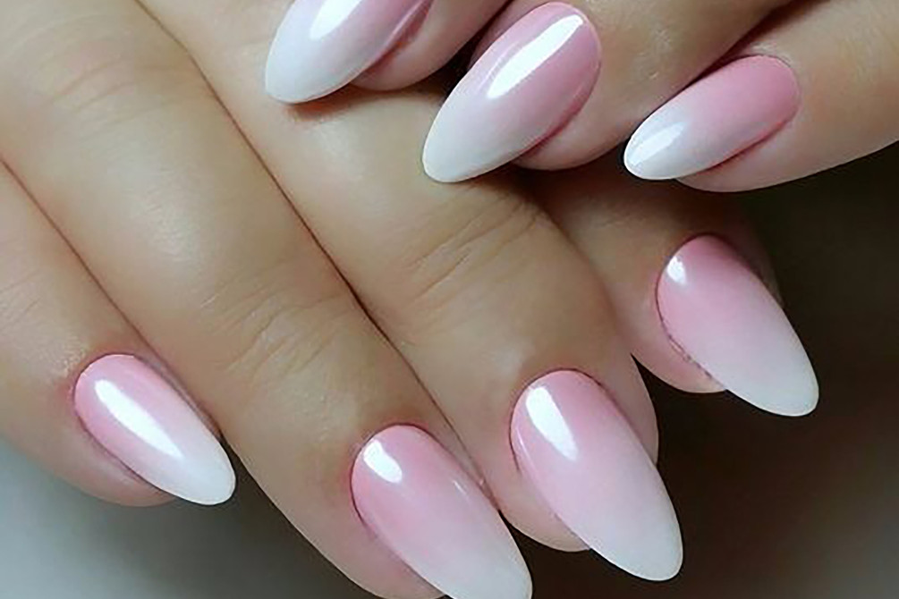
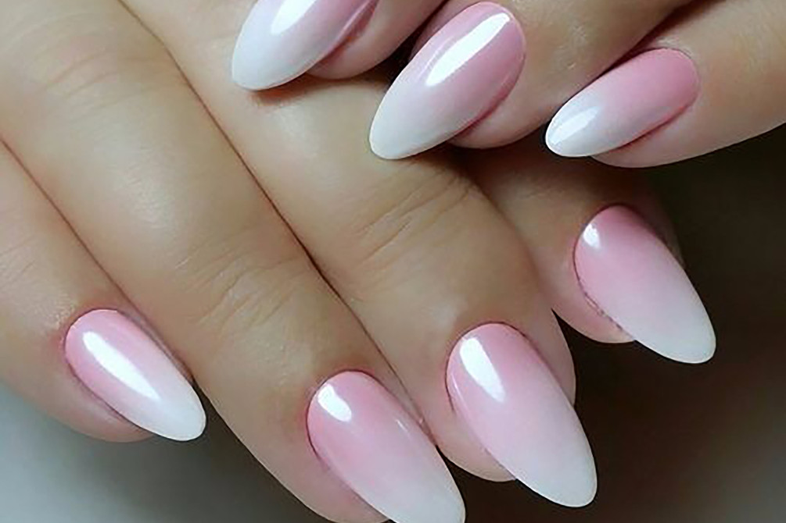
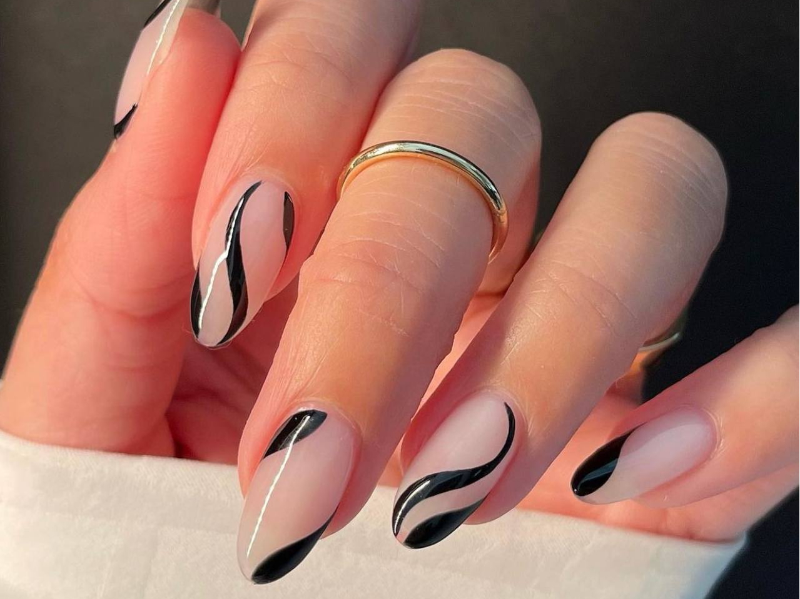
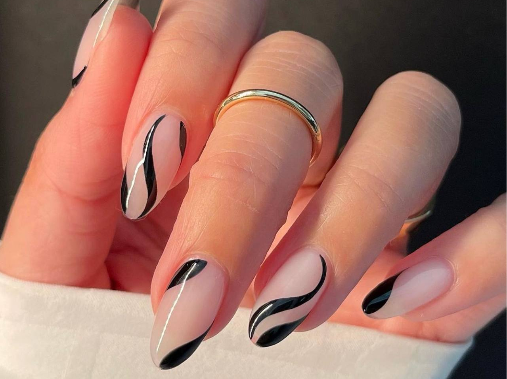
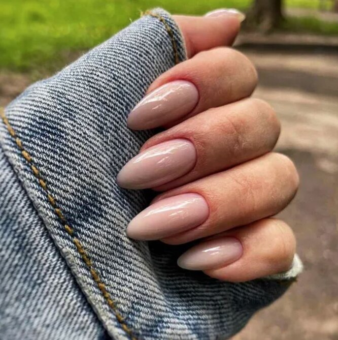
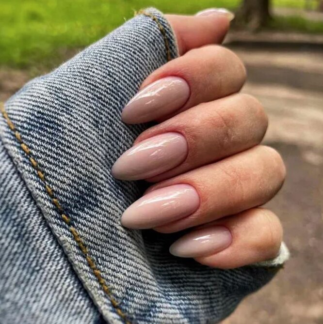

 

 


Нужно сразу сказать, что обрезной классический маникюр может быть небезопасным. В Европе его прозвали «хирургическим». Кутикула при такой процедуре обрезается щипчиками или ножничками. Неаккуратная обработка инструмента для обрезного маникюра или ранение кожи может грозить тяжелыми последствиями.
При выполнении данного маникюра применяют ванночки с размягчающим раствором. Следует учесть, что влажный ноготь нельзя подпиливать, поэтому форма ногтевой пластине придается в первую очередь.